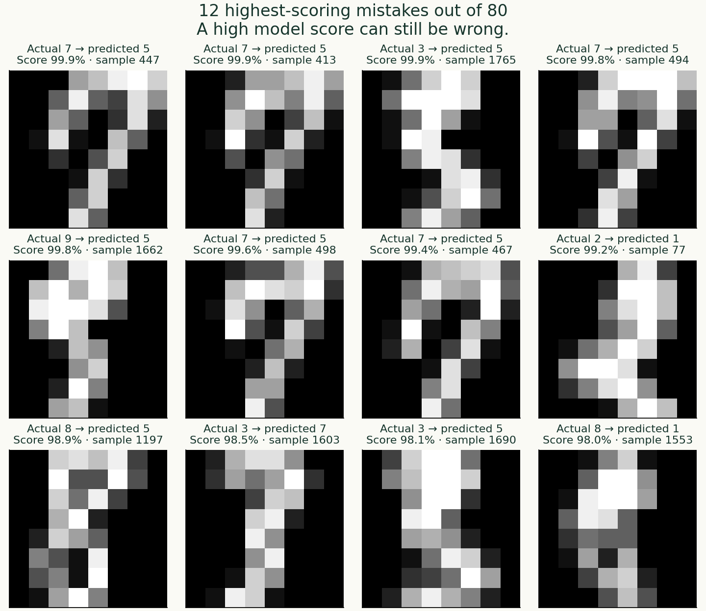
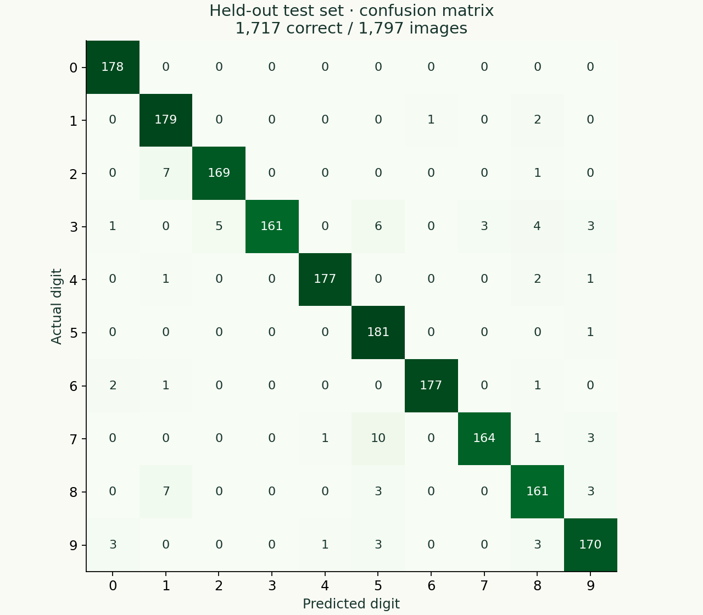
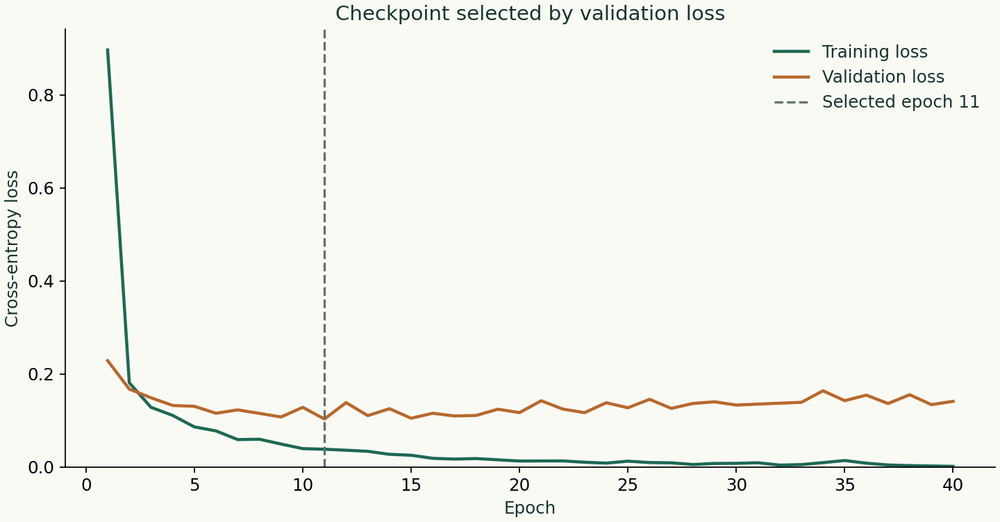

Preserve the split
3,058 training images, 765 validation images, and the original 1,797-image UCI test file. Validation comes only from the training file.
IMAGE CLASSIFICATION · PYTORCH · CPU
A handwritten-digit classifier you can inspect—including the mistakes.
A compact neural network learns from prepared 8×8 images. Compare it with a linear baseline, explore the held-out test set, and see where a high model score still gets it wrong.
1,717 of 1,797 correct
1,700 of 1,797 correct
Every error stays visible
01 / LOOK INSIDE THE RESULTS
Real test images. Live inference
using the exported weights.
MODEL PREDICTION
Loading comparison…
A score describes this model’s output. It is not a guarantee, and it is not calibrated confidence.
02 / AN AUDITABLE EXPERIMENT
3,058 training images, 765 validation images, and the original 1,797-image UCI test file. Validation comes only from the training file.
A 64 → 64 → 10 network, with ReLU and 4,810 parameters. Epoch 11 has the lowest validation loss across the fixed 40-epoch run.
Compare with logistic regression using the same training rows. Publish the weights, every prediction, and the confusion matrix.
This is one dataset and one seed. The 17-image advantage over the baseline is a measured result from this run, not proof that this model is generally better.
03 / EVIDENCE, INCLUDING THE ERRORS



04 / REPRODUCE & UNDERSTAND
The demo handles the dataset’s prepared digits. It does not read arbitrary photos or uploaded handwriting. Inference runs locally in your browser; no images are uploaded.
Data credit: Alpaydin & Kaynak (1998), Optical Recognition of Handwritten Digits, UCI Machine Learning Repository, CC BY 4.0. Images are scaled for display. The original train/test boundary is preserved.
Prepared for Mustafa Al Azzawi with Codex assistance. Training and verification were executed in the assistant’s Linux environment. This new portfolio experiment is separate from his university coursework.